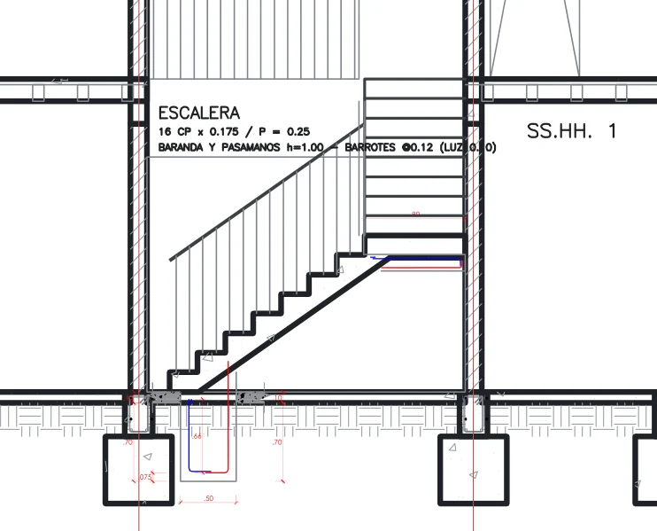

05 · Escalera
Escalera en L de dos tramos
- Contrapasos
- 16 × 0.175 = 2.80 m
- Pasos
- 14 × 0.25 m (7 + 7)
- Ancho libre
- 0.90 m
- Descanso
- 0.90 × 0.90 m a + 1.40
- Altura libre
- 2.775 m
- Protecciones
- Baranda y pasamanos h = 1.00 m · barrotes @ 0.12 m
La llegada al segundo piso (0.725 m libres) queda pendiente de revisión.

